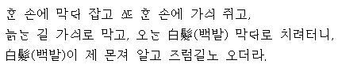

고개 너머 사는 성 권농 집의 술이 익었다는 말을 어제 듣고,
누워 있는 소를 발로 차서 일으켜 언치만 얹어서 눌러 타고,
아이야, 네 권롱 어른 계시냐? 정 좌수 왔다고 여쭈어라.
지은이 : 정철(鄭澈)
갈래 : 평시조. 단시조. 정형시
율격 : 3(4)·4조. 4음보
성격 : 전원한정가(田園閑情歌). 풍류적, 전원적, 경쾌함
표현 : 서사적, 압축적, 해학적, 시상의 과감한 생략으로 인한 비약적 표현, 호방한 성격이 드러남
제재 : 술과 벗
주제 : 전원 생활의 흥취(興趣)
출처 : 송강가사
풀이
한 잔 먹새 그려 또 한 잔 먹새 그려. 꽃을 꺾어 술잔 수를 세면서 한없이 먹세 그려.
이 몸이 죽은 후에는 지게 위에 거적을 덮어 꽁꽁 졸라 묶여 (무덤으로) 실려 가거나,
곱게 꾸민 상여를 타고 수많은 사람들이 울며 따라가거나,
억새풀, 속새풀, 떡갈나무, 버드나무가 우거진 숲에 한 번 가기만 하면 누런 해와 흰 달이 뜨고, 가랑비와 함박눈이 내리며,
회오리바람이 불 때 그 누가 한 잔 먹자고 하겠는가?
하물며 무덤 위에 원숭이가 놀러 와 휘파람을 불 때 (아무리 지난날을) 뉘우친들 무슨 소용이 있겠는가?
갈래 : 사설시조
작자 : 정철(鄭澈)
성격 : 낭만적, 유흥적, 허무적, 퇴폐적, 풍류적
심상 : 묘사적(북망산천의 묘사는 영상미의 극치를 보여줌)
표현 : 초장에 쓰인 수사법은 a-a-b-a형식의 반복법, 열거법, 대조법이고, 형식상 파격이 심하지만 3장의 구성 체계에서 중장이 길어지는 사설시조의 기본틀을 유지하고 있음
제재 : 술
주제 : 인생 무상과 음주 취락 권유, 술로써 인생의 무상함을 해소함
의의 : 이 시조는 국문학사상 최초의 사설 시조라고 불리는 '장진주사(將進酒辭)'라는 작품이다. <순오지>(홍만종의 시화)에 이백(李白), 이하(李賀), 두보(杜甫)의 명시인 <장진주>와 시상이 같다고 평함
출전 : <송강가사 이선본>
풀이
봄 산에 쌓인 눈을 녹인 바람이 잠깐 불고 어디론지 간 곳 없다.
잠시 동안 (그 바람을) 빌려다가 머리 위에 불게 하고 싶구나.
귀 밑에 여러 해 묵은 서리(백발)를 (다시 검은 머리가 되게) 녹여 볼까 하노라.
작자 : 우탁
연대 : 고려 충혜왕
종류 : 평시조, 단형시조
제재 : 서리(백발)
성격 : 탄로가(嘆老歌)
표현 : 은유법, 도치법
주제 : 탄로(늙음을 한탄)
풀이
한 손에 막대를 쥐고 또 한 손에는 가시를 쥐고
늙는 길을 가시로 막고 오는 백발을 막대로 치려 했더니
백발이 제가 먼저 알고서 지름길로 오는구나.
지은이 : 우탁
연대 : 고려말
종류 : 평시조, 단형 시조
표현 : 의인법, 대구법, 과장법, 대조법
성격 : 탄로가, 직서적, 해학적
제재 : 늙음
주제 : 탄로(늙음을 한탄함), 늙음에 대한 한탄
풀이
하얗게 핀 배꽃에 달빛은 은은히 비추고 은하수는 (돌아서) 자정을 알리는 때에
가지 끝에 맺힌 봄의 정서를 (배꽃 한 가지에 어린 봄날의 정서를) 자규가 알고서 저리 우는 것일까마는
다정다감한 나는(이렇듯 다정다감함은) 그것이 병인 듯해서, 잠을 이루지 못하노라.
지은이 : 이조년
연대 : 고려 충숙왕 때
형식 : 평시조, 단시조
성격 : 다정가, 서정적, 애상적, 감각적, 묘사적
구성 : 선경후정의 방식
초장 : 밝은 달 아래 배꽃이 하얗게 피어 있는 봄밤의 정경 - 풍경
중장 : 소쩍새 울음소리 들리는 봄날 밤의 분위기 - 초장과 중장은 선경에 해당
종장 : 봄밤의 애상과 우수에 잠겨 잠 못 이루는 심정 - 종장은 후정에 해당
제재 : 봄의 자연물(배꽃, 달, 은하수, 소쩍새)
주제 : 봄 밤의 정한, 봄밤의 애상적 정서
표현 : 상징법, 의인법, 시각적 심상과 청각적 심상을 활용하였고, 선경후정의 방식에 따라 시상이 전개됨
특징 : 백색의 이미지(이화, 월백, 은한 등)로 정감을 형성하고, 은하수가 반짝이는 깊은 봄밤을 배경으로 하얗게 피어난 배꽃을 비추는 은은한 달빛과 소쩍새 울음 소리 등을 통해 봄날에 느끼는 애상감을 잘 그려 낸 작품임.
풀이